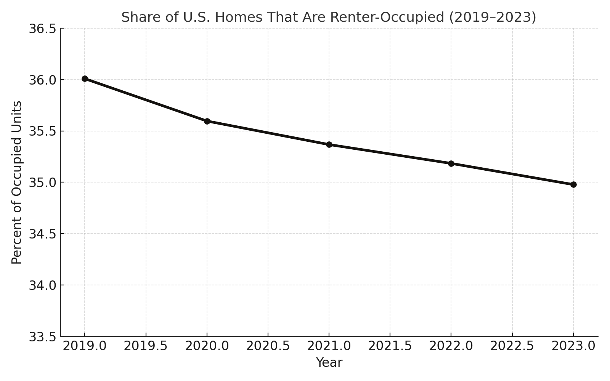
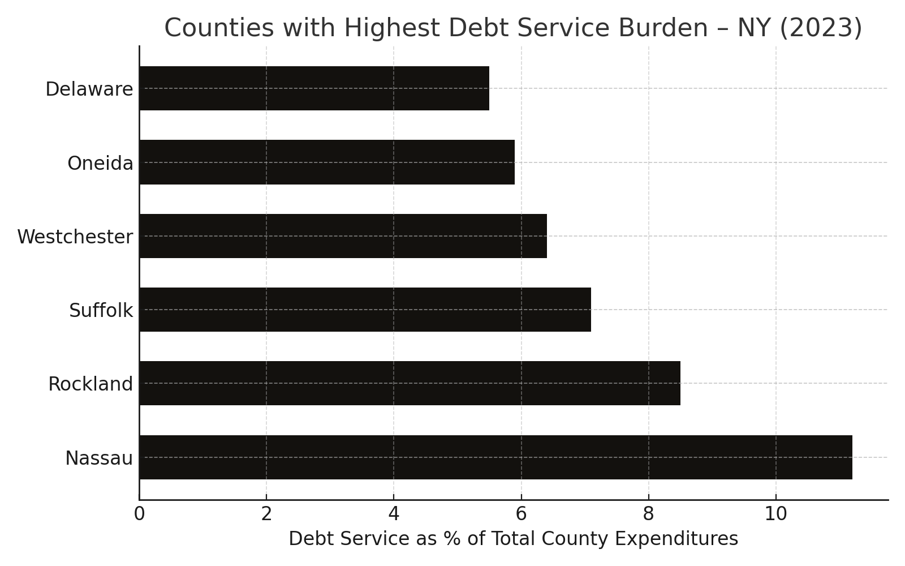
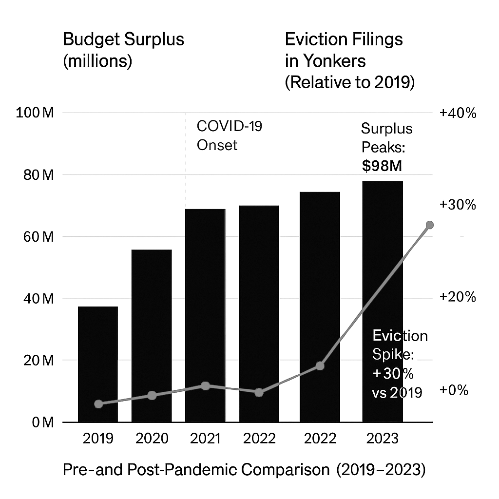

Civic Insights Feed
A growing feed of short-form, data-backed observations drawn from housing, labor, environment, and infrastructure datasets. These snapshots aim to reveal patterns, pressure points, and structural truths across the civic landscape.
Insight 016 – April 10, 2025
In 2023, the American Housing Survey classified more than 6.5 million housing units as either severely or moderately inadequate. These included homes with broken plumbing, failed heating systems, exposed wiring, and other major infrastructure deficiencies.
That’s roughly 1 in 20 homes nationwide — a signal that housing policy must consider not just supply, but habitability.
Generated by CivHub AI v0.1Source: American Housing Survey (AHS) | Data: AHS Table 5 (2023)
Insight 015 – April 10, 2025
Over 1 in 3 U.S. renter households is rent-burdened.
In 2023, the American Housing Survey reported that nearly 37% of renter households in the United States spent more than 30% of their income on housing costs — the standard threshold for “rent burden.” That amounts to more than 47 million households.
This housing cost pressure affects a wide range of income levels and geographies, signaling persistent structural affordability challenges across the country.
Generated by CivHub AI v0.1Source: American Housing Survey (AHS) | Data: AHS Table 10 (2023)
Insight 014 – April 10, 2025
1 in 3 homes in the U.S. is now renter-occupied.
In 2023, renters occupied nearly 45 million housing units, representing 35% of all occupied homes in the country. While homeownership remains the majority, the renter class is no longer a fringe or transitional group — it’s now one-third of the nation.
Though the renter share has declined slightly in recent years, the absolute number of renters remains historically high. This has major implications for housing policy, affordability, and civic inclusion. Public systems must adapt to reflect this shifting reality.
 Generated by CivHub AI v0.1Source: U.S. Census Bureau | Data: ACS DP04 5-Year Estimates (2019–2023)
Insight 013 – April 9, 2025
Some counties spend over 10% of their entire budget just paying off debt.
In 2023, Nassau County spent 11.2% of its total expenditures on debt service — more than $330 million. That’s not funding new infrastructure or public programs. It’s paying for the past.
This pattern isn’t unique. Other counties with high debt burdens include Rockland, Suffolk, and Westchester, where more than 1 in 14 public dollars goes toward servicing debt.
As debt costs climb, less money is left for critical services like housing, public safety, or infrastructure maintenance.
Debt service may be invisible — but it quietly reshapes what governments can do.
 Generated by CivHub AI v0.1Source: NYS Comptroller’s Financial Data | Data: Local Gov Expenditure CSVs (2023)
Insight 012 – April 6, 2025
In 2023, Westchester County reported a $98 million budget surplus — its largest in over a decade — while eviction filings in Yonkers rose by over 30% compared to pre-pandemic levels. The County’s financial cushion wasn’t used to address the housing crisis directly, raising questions about the disconnect between fiscal stability and public need.
 Generated by CivHub AI v0.1Sources: Westchester County 2023 Budget Summary Report; Office of Court Administration: Yonkers Housing Court Filings; LoHud and The Journal News
Insight 011 – April 6, 2025
Over 13 million housing units in the U.S. are currently vacant, comprising more than 10% of the national housing stock. As housing crises intensify, this figure underscores the need to scrutinize not just supply, but access and distribution.
 Generated by CivHub AI v0.1
Generated by CivHub AI v0.1Source: U.S. Census Bureau | Data: ACS DP04 CSV
Insight 010 – April 6, 2025
Despite a civilian labor force of over 171 million, more than 98 million Americans aged 16+ are not in the labor force—a significant portion of the population that’s neither employed nor actively seeking work.
This discrepancy invites deeper questions about the structure of our economy, barriers to employment, and who gets counted when we talk about the “working” population.
 Generated by CivHub AI v0.1
Generated by CivHub AI v0.1Source: U.S. Census Bureau | Data: ACS Income & Employment CSV
Insight 009 – April 6, 2025
According to the latest ACS 2023 data, just over 10% of U.S. housing units are vacant, with over 60% of occupied homes being detached single-family structures. Homeowner vacancy is low at 1%, while rental units show a 5.5% vacancy rate—offering a quick glimpse into national housing availability and structure type.
 Generated by CivHub AI v0.1
Generated by CivHub AI v0.1Source: U.S. Census Bureau | Data: ACS 2023 Housing CSV
Meta Insight 002 – March 29, 2025
Some of New York's most populous counties also host the largest number of EPA-monitored facilities. This clustering suggests that environmental oversight efforts are concentrated in high-density urban areas—an important overlap when considering environmental justice policy.
 Generated by CivHub AI v0.1
Generated by CivHub AI v0.1Sources: U.S. Census Bureau, EPA FRS | Data: EPA CSV, Census CSV
Meta Insight 001 – March 28, 2025
Counties with more environmental facilities also tend to have higher poverty rates. This pattern raises environmental justice concerns, suggesting that lower-income communities may bear a disproportionate regulatory or environmental burden.
 Generated by CivHub AI v0.1
Generated by CivHub AI v0.1Sources: U.S. Census Bureau, EPA FRS | Data: EPA CSV, Census CSV
Insight 008 – March 29, 2025
The New York State Budget for 2024–25 shows a significant reduction in funding for Worker Protection and Public Safety. These functions saw the sharpest cuts compared to the previous year, raising questions about the shifting priorities in state spending.
 Generated by CivHub AI v0.1
Generated by CivHub AI v0.1Source: NY State Budget Archive | Data: Cleaned CSV
Insight 007 – March 28, 2025
Despite economic turbulence, Health, Education, and Social Services remain the top-funded categories in the NY State Budget, continuing a five-year trend of consistent investment.
 Generated by CivHub AI v0.1
Generated by CivHub AI v0.1Source: NY State Budget | Data: Cleaned CSV
Insight 006 – March 28, 2025
New York's 2024–25 budget includes steep funding cuts to Worker Protection and Public Safety—a shift that may signal a reprioritization of state oversight programs.
 Generated by CivHub AI v0.1
Generated by CivHub AI v0.1Source: NY State Budget | Data: Cleaned CSV
Insight 005 – March 28, 2025
In Westchester County, children under 18 experience the highest poverty rates. Over 11% of youth live below the poverty line—revealing disproportionate vulnerability for the youngest residents.
 Generated by CivHub AI v0.1
Generated by CivHub AI v0.1Source: U.S. Census Bureau | Data: ACS Poverty CSV
Insight 004 – March 28, 2025
Kings, Queens, and New York counties (Brooklyn, Queens, Manhattan) host the highest number of EPA-registered environmental sites in the state. These include air quality monitors, hazardous waste sites, and other facilities tracked by federal regulators.
 Generated by CivHub AI v0.1
Generated by CivHub AI v0.1Source: EPA Facility Registry Service | Data: EPA NY CSV
Insight 003 – March 27, 2025
The NY State Budget reveals massive single-year funding spikes for Higher Education and Transportation. Some lines jumped from $0 to over $100M—a flagged anomaly in an otherwise steady budget.
 Generated by CivHub AI v0.1
Generated by CivHub AI v0.1Source: NY State Budget | Data: Cleaned CSV
Insight 002 – March 27, 2025
Health, Education, and Social Services have received the highest levels of funding in the NY State Budget for the past five years—despite fluctuations elsewhere, these categories show a long-term trend of prioritization.
 Generated by CivHub AI v0.1
Generated by CivHub AI v0.1Source: NY State Budget | Data: Cleaned CSV
Insight 001 – March 26, 2025
In the 2023–24 NY State Budget, Health saw the largest year-over-year funding increase—up nearly $10 million from the prior year.
 Generated by CivHub AI v0.1
Generated by CivHub AI v0.1Source: NY State Budget | Data: Cleaned CSV